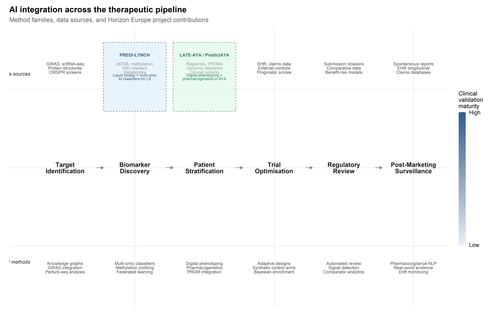
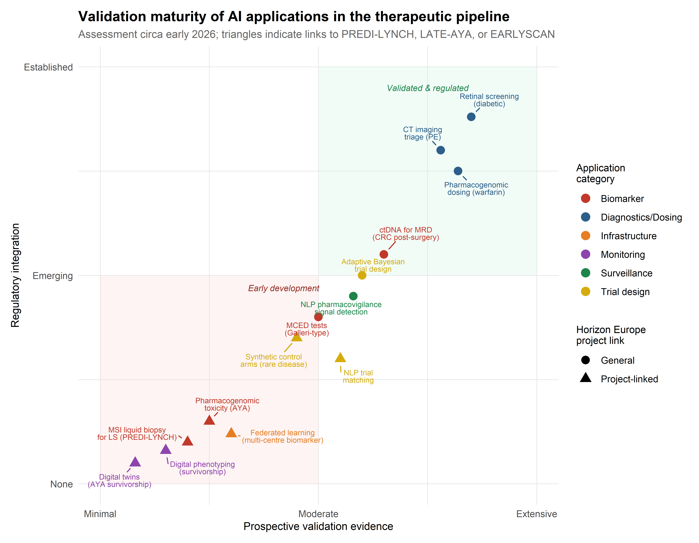

6 AI Across the Therapeutic Pipeline
6.1 Introduction: AI as infrastructure for precision gene therapy
Chapters 1 and 2 examined CRISPR systems as molecular tools; Chapter 3 surveyed AI methods for their optimisation; Chapters 4 and 5 addressed therapeutic applications in rare genetic diseases and the clinical pipeline through which gene therapies reach patients. The present chapter widens the frame. Rather than focusing on the editing machinery, it follows the computational infrastructure that now runs through every stage of the therapeutic pipeline—from the identification of druggable targets through post-marketing pharmacovigilance. The central claim is that AI in gene therapy is not a discrete tool deployed at isolated decision points but an infrastructure that shapes how evidence is generated, aggregated, and acted upon at each stage, and that the particular forms this infrastructure takes are contingent on institutional priorities, data availability, and regulatory expectations. Explaining those contingencies requires the sociotechnical analysis this monograph has developed across its preceding chapters.
Two ongoing Horizon Europe projects provide concrete empirical anchors. PREDI-LYNCH (Grant 101213916), a Mission on Cancer initiative led by Oslo University Hospital, is developing AI-powered liquid biopsy technologies for early detection of colorectal, endometrial, and urothelial cancers in individuals with Lynch syndrome—the most common monogenic hereditary cancer predisposition worldwide (Dominguez-Valentin et al., 2020; Møller et al., 2017). PredictAYA/LATE-AYA (Grant 101214879), funded under the same Mission framework, applies pharmacogenetics, digital phenotyping, and population-registry linkage to predict and prevent late effects of cancer treatment in adolescent and young adult (AYA) survivors aged 15–39 (Byrne et al., 2024; Husson et al., 2023). Together, these projects show that AI integration in oncology reconfigures clinical epistemology—raising questions about evidence hierarchies, data sovereignty, and the distributional equity of precision medicine—rather than simply accelerating existing workflows.
6.2 AI for target identification and validation
6.2.1 Genome-wide association studies and polygenic risk scores
The identification of therapeutic targets has been transformed by the convergence of large-scale genomic data with machine learning methods capable of navigating the combinatorial complexity of biological networks. Genome-wide association studies (GWAS) remain a foundational data source, but their direct translational utility is limited by the well-documented gap between statistical association and biological causation (Visscher et al., 2017). The majority of disease-associated variants identified by GWAS reside in non-coding regions, and the genes through which they exert phenotypic effects are frequently not the nearest gene on the chromosome (Gasperini et al., 2019). This has motivated substantial investment in integrative computational frameworks that combine GWAS summary statistics with functional genomic annotations, expression quantitative trait loci (eQTL) data, and chromatin accessibility maps to prioritise causal genes and nominate druggable targets (Finan et al., 2017).
The aggregation of GWAS effect sizes into polygenic risk scores (PRS) introduces a distinct AI application relevant to both cancer susceptibility and therapeutic stratification. PRS models, typically constructed via penalised regression or Bayesian shrinkage methods applied to genome-wide summary statistics, have achieved modest but clinically meaningful discrimination for common cancers including colorectal cancer (Khera et al., 2018; Mavaddat et al., 2019). For Lynch syndrome carriers, whose baseline cancer risk is already elevated by the primary MMR gene variant, PRS may serve as modifiers that refine individual risk estimates and inform the intensity of surveillance. However, the well-documented transferability problem—PRS trained on European-ancestry discovery cohorts show degraded performance in other populations (Martin et al., 2019)—is directly relevant to PREDI-LYNCH’s ambition to deploy early detection tools across diverse European healthcare systems. AI methods for cross-ancestry PRS adaptation, including transfer learning and multi-ancestry meta-analysis, remain under active development, with direct translational implications for equitable risk stratification.
The PRS transferability problem is not merely statistical: it reflects the historical overrepresentation of European-ancestry populations in GWAS discovery cohorts. For PREDI-LYNCH, whose 16-country consortium spans Nordic, Mediterranean, and Eastern European populations with distinct genetic ancestries, this bias creates a tangible risk that risk-stratification models will perform unevenly across sites — undermining the project’s commitment to equitable early detection.
6.2.2 Knowledge graph approaches: linking genes, pathways, and phenotypes
Network-based methods such as knowledge graph embeddings represent genes, diseases, drugs, and biological processes as nodes in a heterogeneous graph and learn low-dimensional representations that capture topological relationships predictive of therapeutic relevance (Chandak et al., 2023; Himmelstein et al., 2017). These approaches have shown particular utility in drug repurposing, where the goal is to identify existing compounds with activity against novel targets (Pushpakom et al., 2019). Deep learning models operating on protein structure, most notably AlphaFold and its derivatives, have further expanded the range of druggable targets by enabling structural predictions for previously uncharacterised proteins, including those in intrinsically disordered regions that resist conventional crystallographic approaches (Jumper et al., 2021; Varadi et al., 2022).
The deployment of knowledge graphs in target identification merits closer examination as an instance of what Bowker and Star termed classificatory infrastructure—a system whose epistemic authority rests as much on the ontological commitments embedded in its architecture as on the data it aggregates (Bowker & Star, 1999). When a knowledge graph represents Lynch syndrome as a node connected to mismatch repair genes (MLH1, MSH2, MSH6, PMS2) through “causally associated with” edges, it stabilises a particular model of disease aetiology that shapes downstream target prioritisation. The choice of edge types, the curation standards for node inclusion, and the weighting schemes applied to different evidence sources all constitute design decisions with epistemic consequences that are rarely made visible to end users.
This observation is directly relevant to the PREDI-LYNCH project’s biomarker discovery pipeline. Lynch syndrome’s genetic architecture—driven by pathogenic germline variants in DNA mismatch repair genes—is relatively well characterised compared to most complex diseases, with carriers facing lifetime risks of 40–80% for colorectal cancer and 40–60% for endometrial cancer depending on the specific gene involved (Dominguez-Valentin et al., 2020). Yet the clinical heterogeneity within LS carriers is substantial: despite carrying the same pathogenic variant, some individuals develop cancer in their twenties while others remain cancer-free into their sixties. This phenotypic variation suggests the involvement of modifier genes, epigenetic factors, and environmental exposures that current knowledge graphs capture only partially. The PREDI-LYNCH consortium’s strategy of combining multi-omic liquid biopsy data with AI-driven analysis aims to move beyond the deterministic gene–disease associations encoded in existing knowledge bases toward a more probabilistic, context-sensitive model of cancer risk.
6.2.3 CRISPR screen analysis with ML: identifying therapeutic targets
The integration of CRISPR screening data with computational frameworks opens a productive intersection for the themes of this monograph. Genome-wide CRISPR knockout and activation screens generate high-dimensional phenotypic readouts—proliferation, viability, reporter expression, morphological features—across thousands of genetic perturbations (Shalem et al., 2014). Analysing these screens requires sophisticated computational pipelines for guide-level deconvolution, hit calling, and the identification of genetic interactions (Hart & Moffat, 2016; Li et al., 2014). More recently, single-cell CRISPR screens (Perturb-seq) have enabled the measurement of transcriptomic consequences of individual perturbations at single-cell resolution, generating datasets of extraordinary dimensionality that are amenable to deep learning approaches for disentangling gene regulatory networks (Dixit et al., 2016; Replogle et al., 2022).
The analytical challenge of Perturb-seq data is instructive for understanding the role of AI in target identification more broadly. Each cell in a Perturb-seq experiment receives a guide RNA targeting a specific gene, and the resulting transcriptome is captured by single-cell RNA sequencing. The dataset thus constitutes a high-dimensional perturbation-response matrix in which rows are cells (each with an assigned perturbation), columns are genes (expression levels), and the analytical objective is to infer the causal structure of the gene regulatory network from the observed transcriptomic responses. Deep learning methods, including variational autoencoders and graph neural networks, have been applied to learn latent representations of perturbation effects that can predict the transcriptomic consequences of unseen perturbations or combinations of perturbations (Lotfollahi et al., 2023). This in silico perturbation prediction capability has direct implications for therapeutic target identification: if a model can accurately predict the transcriptomic consequence of knocking out or activating a gene, it can in principle screen the entire genome computationally before committing to expensive wet-lab validation.
6.2.4 Causal inference methods for target validation
The transition from statistical association to causal validation of therapeutic targets marks a methodological frontier where AI methods intersect with the formal frameworks of causal inference. Mendelian randomisation (MR), which uses genetic variants as instrumental variables to estimate causal effects of modifiable exposures on disease outcomes, has become a standard tool for target validation in drug development (Davies et al., 2018; Holmes et al., 2021).
AI extensions to classical MR—including machine learning approaches for instrument selection, nonlinear exposure-outcome modelling, and detection of horizontal pleiotropy—have expanded the scope of causal questions addressable within this framework.
Beyond MR, the concept of target-mediated causal inference integrates multi-omic data layers (genomics, transcriptomics, proteomics, metabolomics) to trace the causal chain from genetic variant through molecular intermediary to phenotypic endpoint. Mediation analysis methods, enhanced by machine learning for high-dimensional mediator selection, can identify the specific molecular pathways through which a genetic association operates, thereby nominating not only the target gene but the relevant protein, pathway, or metabolite for therapeutic intervention (VanderWeele, 2016). For Lynch syndrome, where the primary genetic lesion (MMR gene variant) is well characterised but the downstream mechanisms driving cancer in specific organs are incompletely understood, such integrative causal frameworks could inform the selection of organ-specific biomarkers for the PREDI-LYNCH liquid biopsy panel.
6.3 Biomarker discovery and liquid biopsy analytics
6.3.1 Multi-omic data integration: genomics, proteomics, metabolomics
The concept of liquid biopsy—the detection of tumour-derived molecular signals in peripheral blood or other body fluids—has undergone a transformation from a research curiosity to a clinical tool with regulatory approval for specific indications, most notably the detection of EGFR mutations in non-small cell lung cancer (Crowley et al., 2013; Wan et al., 2017). The technical foundations rest on the observation that tumours shed molecular material into the circulation, including circulating tumour DNA (ctDNA), circulating tumour cells (CTCs), extracellular vesicles, and metabolites, each of which carries information about tumour presence, genomic profile, and biological behaviour (Heitzer et al., 2019).
What distinguishes contemporary approaches—and what makes them relevant to this monograph’s focus on AI—is the shift from single-analyte assays to multi-omic platforms that integrate signals across multiple molecular layers. This shift is driven by a fundamental sensitivity challenge: in early-stage cancers, the fraction of circulating DNA derived from the tumour (the tumour fraction) may be below 0.01%, well below the detection limit of any single assay operating in isolation (Phallen et al., 2017). Multi-cancer early detection (MCED) tests, such as those developed by GRAIL (Galleri) and other commercial entities, attempt to overcome this limitation by interrogating methylation patterns across thousands of genomic loci, leveraging machine learning classifiers trained on case-control cohorts to detect cancer signals and predict the tissue of origin (Klein et al., 2021; M. C. Liu et al., 2020).
The integration of heterogeneous omic modalities introduces specific computational challenges that go beyond concatenating feature vectors. Genomic, proteomic, and metabolomic data differ in dimensionality, noise structure, missingness patterns, and biological time-scales. Multi-omic integration architectures range from early fusion approaches (concatenating features before model training) through intermediate fusion (learning modality-specific representations before combining them in a shared latent space) to late fusion (training separate models per modality and combining predictions at the decision level) (Picard et al., 2021). The choice of integration strategy has consequences for both predictive performance and interpretability: early fusion maximises the opportunity to capture cross-modal interactions but is vulnerable to the modality with the highest dimensionality dominating the learned representation, while late fusion preserves modality-specific interpretability but may miss synergistic signals.
6.3.2 AI-powered liquid biopsy for cancer early detection
PREDI-LYNCH’s approach to liquid biopsy analytics addresses a distinctive clinical context with specific computational demands. The project’s innovative clinical trial design will evaluate multiple liquid biopsy technologies simultaneously across the three most common Lynch syndrome cancer types—colorectal, endometrial, and urothelial—partnering with biomarker companies including GNT, MSInsight, MSICare, MSIPlus, and Elypta to deliver what the consortium describes as a “multi-omic solution for affordable, accessible and effective testing” (see European Commission, 2025).
The computational challenges are substantial and instructive. First, the baseline molecular profile of Lynch syndrome carriers differs systematically from the general population due to the underlying mismatch repair deficiency. MMR-deficient cells accumulate somatic mutations at an accelerated rate, generating a distinctive mutational signature (COSMIC SBS6/SBS15) and elevated microsatellite instability (MSI) that must be accounted for in any ctDNA detection algorithm (Alexandrov et al., 2020). AI classifiers trained on general-population cancer cohorts may exhibit degraded performance in LS carriers because the signal-to-noise ratio is altered: the “noise” of background somatic mutations in non-cancerous tissue is elevated relative to the population norm. This requires either LS-specific training sets or transfer learning approaches that can adapt pre-trained models to the LS molecular context.
Second, the multi-cancer detection objective introduces a tissue-of-origin classification problem layered on top of the binary detection task. For LS carriers under surveillance, determining whether a detected signal originates from a colorectal, endometrial, or urothelial primary has direct implications for clinical follow-up. Methylation-based tissue-of-origin classifiers have demonstrated reasonable accuracy in the general population (M. C. Liu et al., 2020), but their performance in the LS context—where tumours arise through a shared mechanism of MMR deficiency regardless of tissue site—remains to be validated. The PREDI-LYNCH project’s integration of microsatellite instability markers, metabolomic markers, and other omic layers is designed in part to improve tissue-of-origin discrimination by exploiting complementary information channels that capture tissue-specific biology beyond the shared MMR deficiency signature.
Third, the project’s ambition to develop solutions “applicable in different healthcare systems” introduces a distributional challenge for AI model deployment. Models trained on data from well-resourced Nordic registries with high-quality biobanking infrastructure may not generalise to healthcare settings in Southern or Eastern European countries where pre-analytical variables (blood collection protocols, sample transport times, storage conditions) differ systematically. This is not just a calibration problem but a question of health equity: if AI-driven liquid biopsy performs differentially across healthcare contexts, it risks reproducing the very inequalities in LS surveillance that the project aims to address. The EARLYSCAN cluster—bringing together PREDI-LYNCH with SHIELD (pancreatic cancer) and DISARM (ovarian cancer)—was established in part to develop harmonised practices that mitigate such cross-system variability, including “shared recruitment and attrition reporting approaches, and common ethics- and GDPR-compliant practices” (The ASCO Post Staff, 2026).
6.3.3 Cell-free DNA fragmentation patterns and methylation signatures
Beyond sequence-level mutations and microsatellite instability, two additional molecular layers of cell-free DNA carry cancer-specific information that AI methods now exploit with growing sophistication. The first is fragmentation pattern analysis (fragmentomics): cfDNA fragments are not randomly distributed but reflect the nucleosome occupancy patterns of their cell of origin. Tumour-derived cfDNA exhibits altered fragment-length distributions, end-motif frequencies, and nucleosome footprints that differ from haematopoietic-derived background cfDNA (Cristiano et al., 2019). Machine learning classifiers operating on genome-wide fragment-coverage profiles have demonstrated the ability to detect cancers and infer tissue of origin from shallow whole-genome sequencing, an approach that is substantially less expensive than deep targeted sequencing or bisulphite conversion for methylation analysis (Mathios et al., 2021).
The second is methylation profiling at CpG sites across the genome. The biological rationale is that methylation patterns are highly tissue-specific and reflect the epigenomic programme of the cell of origin, enabling both cancer detection and tissue-of-origin classification from a single assay (M. C. Liu et al., 2020). For Lynch syndrome, the methylation profile of MMR-deficient tumours includes both the cancer-associated hypermethylation common to many tumour types and the specific epigenomic consequences of defective mismatch repair, including the well-characterised CpG island methylator phenotype (CIMP) in a subset of LS-associated colorectal cancers. AI classifiers that jointly model cfDNA fragmentation and methylation features may achieve sensitivity and specificity improvements over single-modality approaches, though the additional complexity of the feature space requires careful regularisation and cross-validation strategies to avoid overfitting, particularly in the relatively small LS-specific cohorts that PREDI-LYNCH will generate.
6.3.4 Microsatellite instability detection from liquid biopsy
A distinctive feature of the PREDI-LYNCH analytical framework is its engagement with microsatellite instability (MSI) as both a biological signal and a computational challenge. MSI—the accumulation of insertion-deletion mutations at simple sequence repeats due to defective mismatch repair—is the molecular hallmark of Lynch syndrome tumours and a subset of sporadic cancers. The detection of MSI in liquid biopsy specimens requires algorithms sensitive to the characteristic length distributions of microsatellite alleles in cfDNA fragments, which are complicated by the short fragment lengths typical of cell-free DNA (predominantly 130–170 bp) and the stochastic sampling inherent in low-tumour-fraction specimens (Georgiadis et al., 2019; Lu, 2023).
The partnership with MSInsight, MSICare, and MSIPlus reflects the consortium’s recognition that MSI detection in liquid biopsy requires specialised computational approaches distinct from the tissue-based MSI testing algorithms (such as MSIsensor and mSINGS) that have been validated for solid tumour specimens (Niu et al., 2014; Salipante et al., 2014). In the cell-free context, the lower tumour fraction and fragmented nature of cfDNA necessitate probabilistic frameworks that can distinguish tumour-derived microsatellite instability from the background noise of stochastic polymerase slippage and sequencing artefacts. Machine learning classifiers that integrate microsatellite repeat length distributions with adjacent sequence context and fragment-level features define the current frontier, though prospective validation in LS-specific cohorts—precisely what PREDI-LYNCH is designed to provide—remains limited.
The metabolomic dimension of PREDI-LYNCH’s multi-omic approach, supported by the partnership with Elypta, introduces an additional data modality with distinct computational characteristics. Metabolomic profiles capture the downstream functional consequences of genomic alterations, potentially offering earlier detection of metabolic reprogramming that precedes the accumulation of sufficient ctDNA for genomic detection (Wishart, 2019). The integration of metabolomic features with genomic and methylation-based classifiers through ensemble or multi-modal deep learning architectures has shown promise in improving sensitivity for early-stage cancers (L. Liu et al., 2024), though the field remains in a relatively early stage of clinical validation.
6.3.5 Federated learning for multi-centre biomarker validation
The validation of liquid biopsy biomarkers across the 28-partner PREDI-LYNCH consortium and the broader EARLYSCAN cluster introduces a tension between the statistical imperative to maximise training data and the legal and ethical constraints on data sharing. Federated learning (FL)—a distributed machine learning paradigm in which models are trained across multiple data-holding sites without centralising raw data—has been proposed as a technical solution to this tension (Rieke et al., 2020; Sheller et al., 2020). In a federated architecture, each participating site trains a local model on its own patient data, and only model updates (gradients or parameter deltas) are transmitted to a central server for aggregation. The raw data never leave the institutional boundary, potentially satisfying GDPR data minimisation requirements while still enabling multi-site model training.
However, federated learning is not a panacea, and its deployment in a clinical biomarker validation context raises specific challenges. Statistical heterogeneity across sites—driven by differences in patient populations, sample preparation protocols, sequencing platforms, and clinical practices—can cause federated models to converge to solutions that are suboptimal for any individual site, a problem known as client drift (Karimireddy et al., 2020). For PREDI-LYNCH, where the participating sites span Nordic, Southern, and Eastern European healthcare systems with substantial differences in LS ascertainment practices and biobanking infrastructure, this heterogeneity is a reality the model must accommodate if it is to be deployable across Europe, not a nuisance to be averaged away. Personalised federated learning approaches, which allow site-specific model components while sharing a common representation, offer a promising but still largely research-stage solution (Dinh et al., 2020).
From a governance perspective, federated learning does not eliminate data governance challenges; it reframes them. Questions about who controls the aggregation server, how model updates are audited for privacy leakage (membership inference attacks remain a known vulnerability), and how intellectual property in the resulting model is allocated across contributing sites all require institutional agreements that go beyond the technical specification of the learning algorithm. The EARLYSCAN cluster’s working group on “technical data, reuse, and AI” is tasked with addressing precisely these governance questions, making it a case study in the institutional infrastructure required for responsible deployment of distributed AI in clinical research.
6.4 Digital phenotyping and patient-reported outcomes
6.4.1 Wearable sensors and continuous health monitoring
The concept of digital phenotyping—the continuous, passive collection of behavioural and physiological data through smartphones, wearables, and other consumer devices—has been proposed as a means of capturing aspects of health status that are invisible to episodic clinical encounters (Onnela, 2021; Torous et al., 2016). For AYA cancer survivors, who may see their oncologist annually or less, digital phenotyping offers the theoretical possibility of detecting early signs of late effects (fatigue patterns suggestive of cardiac dysfunction, activity changes indicative of musculoskeletal toxicity, mood patterns reflecting psychological distress) between clinical contacts.
The sensor modalities relevant to survivorship monitoring span a broad range. Accelerometry and step-count data from consumer wearables can serve as proxies for physical function and fatigue, with clinically meaningful changes detectable through longitudinal analysis of within-person trends (Low et al., 2020).
Heart-rate variability (HRV) derived from optical photoplethysmography sensors may capture early cardiac autonomic dysfunction preceding clinically manifest cardiotoxicity. Sleep architecture, estimated from actigraphy and movement patterns, provides information about a domain—sleep quality—that is strongly correlated with quality of life in cancer survivors and may serve as an early indicator of endocrine or neurological late effects. The AI challenge is to extract clinically actionable signals from these noisy, high-frequency data streams while accounting for the substantial within-person variability driven by behavioural and environmental factors (weather, work schedules, social context) that are unrelated to the health outcomes of interest.
6.4.2 Natural language processing of patient narratives
An underexplored dimension of digital phenotyping involves the computational analysis of unstructured text generated by patients—clinical notes, online forum posts, free-text survey responses, and increasingly, voice recordings from clinical encounters or patient diaries. NLP methods, including transformer-based language models fine-tuned on clinical corpora, can extract symptom mentions, sentiment patterns, and functional status indicators from these narratives with accuracy approaching that of trained human annotators (Velupillai et al., 2018; Wang et al., 2022).
For PredictAYA/LATE-AYA’s focus on psychosocial outcomes, NLP applied to patient narratives offers an additional data source that captures the experiential dimension of survivorship—the subjective burden of fertility concerns, body image changes, relationship challenges, and existential distress—that structured PROMs may fail to elicit, either because the instruments lack relevant items or because patients self-censor on standardised questionnaires. The methodological challenge is to develop NLP systems sensitive to the linguistic registers of young adults discussing cancer-related concerns, which differ substantially from the clinical language on which most medical NLP models have been trained. Domain adaptation and fine-tuning on AYA-specific corpora are prerequisites for reliable deployment in this context.
6.4.3 AI-driven patient-reported outcome measures (PROMs)
The COMPRAYA study—a prospective observational cohort enrolling approximately 4,000 AYA cancer patients aged 18–39—provides the clinical substrate for validating risk prediction models within PredictAYA. A distinctive feature of this cohort is its systematic collection of patient-reported outcome measures (PROMs), capturing the psychosocial dimensions of cancer survivorship that biomarker-focused approaches inevitably miss. The integration of PROMs with biological data in risk prediction models raises methodological questions about how to weight subjective reports alongside objective measurements, and more fundamental questions about what counts as a clinically meaningful outcome in survivorship care (Basch et al., 2017; Mercieca-Bebber et al., 2018).
AI methods can contribute to PROM science at several levels. Adaptive testing algorithms, based on item response theory (IRT) models, can reduce respondent burden by selecting the most informative items from a large item bank based on the individual’s response pattern, achieving comparable measurement precision with fewer questions (Choi et al., 2010). Machine learning applied to longitudinal PROM trajectories can identify latent subgroups of patients with distinct symptom evolution patterns that may not correspond to conventional clinical categories, enabling a data-driven taxonomy of survivorship experiences (Zeng et al., 2025).
For the AYA population, where engagement with follow-up is a recognised challenge, AI-optimised PROMs that minimise respondent burden while maximising informational yield may improve data completeness and representativeness.
6.4.5 Digital twins for long-term toxicity prediction
The concept of the digital twin—a continuously updated computational model of an individual patient that integrates historical data, real-time sensor inputs, and mechanistic biological knowledge to simulate health trajectories—has been proposed as the ultimate expression of personalised medicine in chronic disease management (Corral-Acero et al., 2020; Laubenbacher et al., 2024).
As of 2026, no digital twin system has achieved regulatory validation for individual patient-level prediction in oncology or gene therapy. The concept remains largely aspirational in clinical practice, though its components — longitudinal data integration, physiological simulation, and adaptive updating — are individually advancing through more modest applications in pharmacokinetic modelling and treatment planning.
For AYA cancer survivors, a digital twin could in principle simulate the long-term consequences of a specific treatment regimen on an individual’s organ systems, incorporating genetic susceptibility factors identified through pharmacogenomic profiling, real-time physiological data from wearable sensors, and psychosocial context captured through PROMs and NLP of patient narratives.
The gap between this vision and current capability is substantial. Digital twins in their most ambitious formulation require mechanistic models of organ physiology, pharmacokinetic/pharmacodynamic models of drug exposure, and validated dose-response relationships for late-effect endpoints—most of which are either unavailable or incompletely characterised for the AYA survivorship context. What is more feasible in the near term, and more directly aligned with PredictAYA’s research programme, is the development of individualised prediction models that combine population-level risk factors with individual-level data to generate personalised risk trajectories. Such models—which might be described as statistical digital twins rather than mechanistic ones—can be constructed using mixed-effects models or Bayesian nonparametric approaches that learn individual deviation parameters from population trends (Rizopoulos, 2012). The COMPRAYA cohort, with its combination of registry data, genomic profiles, treatment records, wearable sensor data, and longitudinal PROMs, provides the data infrastructure needed to develop and internally validate such individualised prediction tools, even if full mechanistic digital twins remain a longer-term aspiration.
6.5 Patient stratification and trial design optimisation
6.5.1 ML-based eligibility criteria refinement
Patient stratification—the assignment of individuals to therapeutically relevant subgroups based on molecular, clinical, or behavioural features—is the operational core of precision medicine. In the context of gene therapy and advanced therapeutics, stratification determines who receives treatment, at what dose, with what monitoring schedule, and with what expected outcome. The AI methods deployed for stratification span a wide range, from classical supervised learning approaches (logistic regression, random forests, gradient boosting) applied to structured clinical data through to deep learning architectures operating on imaging, genomic, or multi-modal inputs (Rajkomar et al., 2019; Topol, 2019).
What distinguishes patient stratification from the diagnostic classification discussed in the preceding section is its temporal and contextual complexity. Stratification is not a single prediction but an evolving assessment that must account for treatment history, comorbidities, patient preferences, and the dynamic trajectory of disease. This temporal dimension is particularly salient for the two clinical populations addressed by PREDI-LYNCH and LATE-AYA/PredictAYA. Lynch syndrome carriers are stratified not on the basis of a single test result but through a longitudinal surveillance programme that integrates genetic risk (which gene is affected, family history), current biomarker status (liquid biopsy results), and prior screening history (colonoscopy findings, polyp characteristics). AYA cancer survivors are stratified for late-effect risk based on treatment exposures (cumulative doses of specific chemotherapeutic agents, radiation fields), constitutional genetic factors (pharmacogenomic variants affecting drug metabolism), and evolving clinical endpoints that may not manifest for years or decades after treatment completion.
Machine learning methods for eligibility criteria refinement offer a specific application of stratification to clinical trial design. Overly restrictive eligibility criteria are a recognised barrier to trial accrual and generalisability, particularly for rare conditions and paediatric/AYA populations where recruitment is already challenging. Algorithms that learn from historical trial data to identify criteria that restrict enrolment without meaningfully affecting safety or efficacy outcomes can suggest broadened eligibility that improves both recruitment and external validity (Kang et al., 2017).
For PREDI-LYNCH’s multi-site clinical trial across 16 countries, AI-assisted harmonisation of eligibility criteria could help navigate the tension between scientific rigour and practical enrolment across diverse healthcare systems.
6.5.2 Bayesian adaptive trial designs with real-time AI monitoring
Clinical trials for gene therapies and advanced therapeutics face structural challenges—small patient populations, heterogeneous disease presentation, long latency to primary endpoints—that are poorly served by traditional fixed-sample randomised controlled trial designs (Chapter 5). AI-enabled adaptive designs offer a potential solution by allowing trial parameters to be modified based on accumulating data while preserving inferential validity (Pallmann et al., 2018; Thorlund et al., 2018).
Bayesian adaptive randomisation, in which allocation probabilities are updated based on interim outcome data, has been applied to platform trials in oncology and rare diseases with notable success. The I-SPY 2 trial for neoadjuvant breast cancer treatment demonstrated the feasibility of adaptive randomisation across multiple experimental arms, graduating therapies to phase III on the basis of Bayesian predictive probabilities rather than fixed-sample hypothesis tests (Barker et al., 2009). For gene therapies targeting rare genetic conditions, Bayesian borrowing designs that incorporate information from historical controls or related populations can reduce the sample size requirements that would otherwise render rigorous trials infeasible (Viele et al., 2014).
Machine learning contributes to trial optimisation at several points beyond the design stage. Patient identification and recruitment benefit from natural language processing (NLP) applied to electronic health records, which can identify trial-eligible patients who would otherwise be missed by manual chart review (Ni et al., 2015). This is particularly relevant for Lynch syndrome and AYA cancer survivors, populations that may be distributed across multiple clinical specialities and not readily identifiable through diagnostic codes alone. Endpoint prediction models, trained on early surrogate markers, can enable interim analyses that detect futility or efficacy signals earlier than would be possible with the primary endpoint alone (Goldsack et al., 2023).
6.5.3 Synthetic control arms from real-world data
The concept of synthetic control arms—in which historical or real-world data serve as the comparator rather than a concurrent randomised control group—has gained regulatory traction for rare diseases and accelerated approval pathways (Thorlund et al., 2020; U.S. Food and Drug Administration, 2018). For ultra-rare conditions where randomisation to a no-treatment arm is ethically impermissible or practically infeasible, synthetic controls constructed from natural history registries or electronic health record data may be the only viable comparator.
The construction of a synthetic control arm is at root a causal inference problem under selection bias. Patients in the external data source differ systematically from those enrolled in the active trial arm in ways that are both observed (age, disease severity, prior treatment) and unobserved (motivation, access to care, unmeasured comorbidities). Propensity score methods, inverse probability weighting, and targeted minimum loss-based estimation (TMLE) are established approaches to adjusting for observed confounders (Hernán & Robins, 2020), but the assumption of no unmeasured confounding is untestable and frequently violated. Machine learning extensions—doubly robust estimators, causal forests, targeted regularisation—offer improved flexibility in modelling the outcome and treatment assignment surfaces but do not resolve the fundamental identification problem (Chernozhukov et al., 2018).
From an STS perspective, the enthusiasm for synthetic control arms can be read as a negotiated compromise between the evidential standards of randomised experimentation and the pragmatic constraints of rare disease drug development. Regulators such as EMA and FDA have signalled conditional acceptance of synthetic controls while emphasising the need for pre-specification, sensitivity analyses, and transparent reporting of assumptions (European Medicines Agency, 2023). The EARLYSCAN cluster’s emphasis on “harmonized clinical pathway definitions” and “minimum endpoint dictionaries” can be understood in part as an effort to create the standardised data infrastructure that would make cross-project synthetic controls feasible in the hereditary cancer space.
6.5.4 Subgroup identification and precision recruitment
Beyond trial-level design optimisation, AI methods enable the identification of patient subgroups with differential treatment effects that may be invisible to conventional pre-specified subgroup analyses. Causal forest models and modified covariate approaches can estimate heterogeneous treatment effects across the covariate space, identifying patients who benefit most (or least) from a specific intervention (Athey et al., 2019).
In the context of gene therapy, where treatment costs are typically very high and adverse-event profiles may be severe, the ability to identify the subpopulation most likely to benefit has direct implications for both clinical utility and health-economic justification.
For PREDI-LYNCH, subgroup identification applies not to treatment but to surveillance strategy: identifying which LS carriers benefit most from liquid biopsy-based surveillance versus conventional colonoscopy-based approaches, based on their genetic profile (specific MMR gene, variant pathogenicity class), cancer history, and baseline biomarker levels. The goal is to move from a one-size-fits-all surveillance protocol to a risk-adapted strategy in which the frequency and modality of screening are tailored to the individual’s estimated cancer trajectory—a vision that requires robust AI-driven stratification validated across the diverse clinical settings represented in the consortium.
6.6 Pharmacogenomics and personalised dosing
6.6.1 Genetic predictors of CRISPR therapy response
The pharmacogenomic dimension of precision gene therapy extends beyond the classical concern with drug metabolism to encompass the host factors that modulate the efficacy and safety of CRISPR-based interventions. Variability in editing outcomes across patients receiving the same CRISPR construct reflects, in part, constitutive differences in DNA repair pathway activity. The balance between non-homologous end joining (NHEJ) and homology-directed repair (HDR) at the target site is influenced by germline polymorphisms in key repair genes—including TP53BP1, BRCA1, and the Fanconi anaemia pathway components—as well as by cell-cycle status and chromatin accessibility at the target locus (Yeh et al., 2019).
AI models that integrate patient-specific genotypes at DNA repair loci with target-site characteristics (chromatin state, epigenomic marks, local sequence context) could in principle predict editing outcomes at the individual level, enabling patient-specific optimisation of delivery timing, construct design, and conditioning regimen.
The evidence base for such personalised prediction remains thin. Most CRISPR efficacy data derive from in vitro systems or small-cohort clinical trials for conditions like sickle cell disease and beta-thalassaemia (Chapter 5), where the genetic backgrounds of treated patients are insufficiently diverse to support robust pharmacogenomic modelling. As gene therapy clinical programmes expand, the systematic collection of germline genotype data alongside editing outcome measures will be essential for building the training datasets that pharmacogenomic models require. This is an opportunity for prospective planning: embedding pharmacogenomic sample collection into gene therapy trial protocols from the outset, rather than attempting retrospective assembly from biobanks with variable coverage.
6.6.2 AI models for predicting immune response to Cas proteins
A distinct pharmacogenomic challenge concerns the host immune response to Cas proteins, which are bacterially derived and therefore potentially immunogenic in human recipients. Pre-existing adaptive immunity to Streptococcus pyogenes Cas9 (SpCas9) and Staphylococcus aureus Cas9 (SaCas9) has been documented in significant proportions of human populations, with anti-Cas9 T cells and antibodies detectable in up to 70% and 50% of individuals, respectively (Charlesworth et al., 2019; Wagner et al., 2019). The clinical significance of pre-existing immunity—whether it merely reduces editing efficiency or triggers potentially dangerous inflammatory responses—remains an active area of investigation (Chapter 5).
AI models that predict an individual’s likelihood and magnitude of anti-Cas immune response from their HLA genotype, infection history, and baseline immunological parameters could inform patient selection and pre-treatment conditioning. HLA-peptide binding prediction, a well-established application of deep learning in immunoinformatics, can identify which Cas-derived epitopes are most likely to be presented by a given patient’s MHC molecules, enabling a personalised immunogenicity risk assessment (O’Donnell et al., 2020; Reynisson et al., 2020). The integration of such predictions into clinical decision-making—for example, selecting between Cas9 orthologs based on the patient’s predicted immune response profile, or adjusting immunosuppressive conditioning accordingly—exemplifies AI-driven pharmacogenomics applied to gene therapy, connecting Chapter 3’s discussion of guide RNA design with Chapter 5’s analysis of clinical delivery challenges (Bernsen et al., 2020).
6.6.3 Personalised conditioning regimen optimisation
For ex vivo gene therapies that require myeloablative or reduced-intensity conditioning (such as the haematopoietic stem cell transplant-based approaches for haemoglobinopathies), the conditioning regimen is a major source of treatment-associated morbidity. The intensity of conditioning affects both engraftment efficiency (too little conditioning results in poor engraftment of edited cells) and toxicity (excessive conditioning causes organ damage, infection risk, and in some cases secondary malignancies). The optimal conditioning intensity is therefore patient-specific, depending on variables including age, organ reserve, prior treatment exposures, and genetic determinants of drug metabolism (Cavazzana & Mavilio, 2020).
AI-driven conditioning optimisation could integrate these patient-specific variables to recommend individualised regimens that maximise the probability of adequate engraftment while minimising toxicity. Pharmacokinetic/pharmacodynamic (PK/PD) models, enhanced by machine learning for parameter estimation from sparse clinical data, can predict individual drug exposure from a given dosing schedule and adjust accordingly (Sibieude et al., 2022)
For busulfan, the most commonly used conditioning agent in gene therapy, therapeutic drug monitoring is already standard practice, but current approaches rely on population-based PK models that may not adequately capture the interindividual variability driven by genetic factors. The incorporation of pharmacogenomic data—CYP2C19 genotype, glutathione S-transferase polymorphisms—into AI-driven PK models is a near-term opportunity for personalised dosing in gene therapy conditioning.
6.6.4 Reproductive toxicity prediction in AYA populations
The intersection of pharmacogenomics with reproductive health outcomes connects directly to PredictAYA/LATE-AYA’s central research question. Gonadal toxicity—manifesting as premature ovarian insufficiency in women and impaired spermatogenesis in men—is among the most consequential late effects of cancer treatment for AYA survivors, with profound implications for fertility, hormonal health, and psychosocial well-being. The severity of gonadal damage is determined by treatment regimen (alkylating agents, pelvic radiation), cumulative dose, age at treatment, and constitutional genetic factors that modulate individual susceptibility (Anderson et al., 2015; Green et al., 2014).
PredictAYA’s pharmacogenetic component seeks to identify germline genetic variants that explain the observed interindividual variation in treatment-induced gonadal toxicity. Candidate pathways include drug metabolism genes (affecting active metabolite exposure), DNA repair genes (modulating the sensitivity of gonadal tissue to genotoxic damage), and ovarian reserve-related genes (such as those associated with age at menopause in the general population). GWAS-based approaches, applied to cohorts of treated AYA survivors with well-characterised reproductive outcomes, can identify common variants with modest individual effect sizes that collectively explain a meaningful proportion of gonadal toxicity risk (Consortium et al., 2024).
The clinical application of such pharmacogenomic models is the stratification of AYA patients at the point of treatment initiation: those identified as high-risk for gonadal toxicity could be offered fertility preservation interventions (oocyte or sperm cryopreservation, ovarian tissue banking) with greater urgency and specificity than current age-and-regimen-based guidelines permit. AI models that integrate pharmacogenomic risk scores with treatment protocol details and baseline hormonal markers could generate individualised fertility risk predictions presented to patients and clinicians as decision support tools—a concrete instance of precision medicine applied to the survivorship domain that PredictAYA is designed to deliver.
6.7 Post-marketing surveillance and real-world evidence
6.7.1 Natural language processing of electronic health records
The transition from controlled trial environments to routine clinical practice is a critical juncture where AI technologies face their most demanding test. Models trained on curated research datasets encounter the full heterogeneity of real-world clinical practice: variable adherence to protocols, incomplete data capture, off-label use, and patient populations that differ demographically and clinically from trial cohorts (Corrigan-Curay et al., 2018; Sherman et al., 2016). For the AI-driven diagnostic and stratification tools discussed in earlier sections, post-deployment performance monitoring is essential because model degradation—whether through data drift, population shift, or changes in clinical practice—can occur insidiously without overt failure signals.
NLP methods applied to electronic health records are a particularly effective tool for post-marketing surveillance because they can extract clinically relevant information from the unstructured free-text notes that constitute the majority of EHR content. For gene therapy products, where long-term safety data are by definition sparse at the time of regulatory approval, NLP-enabled extraction of adverse events, functional outcomes, and quality-of-life indicators from clinical narratives can supplement the structured data captured in registries and clinical trial follow-up systems (Wang et al., 2018). The challenge is to develop NLP systems with sufficient sensitivity and specificity for the rare adverse events of interest (insertional mutagenesis, immune-mediated organ damage, loss of therapeutic effect) while minimising false-positive signals that could trigger unnecessary alarm.
6.7.2 Signal detection for long-term gene therapy safety
The pharmacovigilance dimension of post-marketing surveillance has been substantially transformed by NLP and machine learning methods applied to spontaneous adverse event reports, social media data, and electronic health record systems. Signal detection algorithms that identify disproportionate reporting of specific adverse events have evolved from frequentist disproportionality measures (reporting odds ratios, proportional reporting ratios) to Bayesian approaches (the Multi-item Gamma Poisson Shrinker, BCPNN) and more recently to deep learning methods that can identify novel safety signals in unstructured clinical narratives (Bate & Evans, 2009; Harpaz et al., 2012).
For PREDI-LYNCH’s liquid biopsy technologies, post-deployment surveillance involves monitoring not only the safety of the test itself (which as a blood draw is minimally invasive) but its diagnostic performance in real-world conditions. False positive results carry significant consequences for LS carriers—unnecessary invasive procedures, psychological distress, healthcare costs—while false negatives may provide false reassurance that delays diagnosis. Systematic collection of downstream clinical outcomes (interval cancers, stage at diagnosis, procedure rates) in a real-world surveillance framework is essential for validating the performance estimates derived from the controlled clinical trial setting.
6.7.3 Registry-based outcome tracking with ML analytics
For PredictAYA/LATE-AYA’s risk prediction tools, the post-marketing challenge is temporal: the models predict outcomes (gonadal toxicity, cardiotoxicity, second malignancies) that may not manifest for years or decades. Prospective monitoring requires sustained data collection infrastructure that outlasts the funding period of any single research project. The Nordic registries provide a partial solution through their population-level coverage and longitudinal linkage capabilities (Pukkala et al., 2018), but the extension of these surveillance capabilities to health systems across all 16 PREDI-LYNCH partner countries (and beyond) requires precisely the kind of cross-national data governance agreements that the EARLYSCAN cluster is designed to facilitate.
Machine learning methods for registry-based outcome tracking go beyond simple incidence estimation to include survival analysis with competing risks (where multiple late-effect endpoints compete for occurrence), multi-state models that capture the transitions between health states over time, and recurrent event analysis for outcomes that can occur multiple times (such as polyp detection in LS surveillance). Deep learning extensions of the Cox proportional hazards model—including DeepSurv and neural multi-task logistic regression—can accommodate nonlinear relationships and high-dimensional covariates while producing the time-to-event predictions required for clinical decision-making (Katzman et al., 2018). The calibration of such models, and their robustness to registry-level differences in coding practices and ascertainment completeness, are prerequisites for deployment as decision support tools in the multi-national context of EARLYSCAN.
6.7.4 Health economics modelling for gene therapy reimbursement
The health-economic dimension of post-marketing evidence generation is particularly consequential for gene therapies, where single-administration treatments with curative intent carry upfront costs ($1–3 million per patient for approved products as of 2025) that challenge conventional reimbursement frameworks designed for chronic therapies with distributed costs (Thielen et al., 2022). AI-assisted health economics modelling can improve the precision and adaptability of cost-effectiveness analyses by learning from real-world utilisation data rather than relying on trial-based assumptions about long-term efficacy, resource consumption, and quality-of-life trajectories.
For the liquid biopsy-based surveillance tools that PREDI-LYNCH is developing, health-economic evaluation must compare the costs and outcomes of AI-driven screening against the current standard of care (primarily colonoscopy for CRC, no established surveillance for urothelial and endometrial cancers in LS). The relevant comparisons include not only the per-test cost differential but the downstream consequences of changed detection patterns: earlier-stage diagnoses (reducing treatment costs), false positives (increasing procedure costs and psychological burden), and changes in patient compliance (liquid biopsy may improve adherence relative to invasive procedures, increasing the effective coverage of surveillance). Microsimulation models that integrate AI-predicted diagnostic performance with cancer progression parameters and healthcare utilisation data can estimate the population-level budget impact and cost-effectiveness of alternative surveillance strategies, generating the evidence that health technology assessment bodies require for reimbursement decisions (Wu et al., 2025).

6.8 Sociotechnical Interlude VI: data infrastructures as political artefacts
6.8.1 Classification, friction, and the politics of data standards
Every AI application surveyed in this chapter depends on data infrastructure: registries, biobanks, electronic health records, harmonised coding systems, and interoperability standards. This STS interlude argues that these infrastructures are not neutral technical substrates but political artefacts that encode particular assumptions about what counts as data, who has authority to collect and interpret it, and whose interests are served by specific configurations of information flow.
A concrete object clarifies the argument. When the EARLYSCAN cluster sets out to define what constitutes a “screening event” across PREDI-LYNCH, SHIELD, and DISARM, it is engaged in what Geoffrey Bowker and Susan Leigh Star analysed in Sorting Things Out (1999) as the work of classificatory infrastructure: the construction of categories that simultaneously organise technical practice and embed moral-epistemic commitments. Bowker and Star showed how classification systems—the International Classification of Diseases, racial categories in apartheid-era South Africa, nursing classification schemes—create residual categories, entities that do not fit neatly and whose misfit reveals the assumptions built into the scheme. In EARLYSCAN, the definition of “screening event” must specify whether a liquid biopsy sample qualifies alongside a colonoscopy, how interval cancers are ascertained, and what pre-analytical variables must be recorded for specimens. Each definitional choice determines what downstream AI classifiers can detect and, equally, what they cannot.
Yet the same “screening event” is also shaped by what Paul Edwards, in A Vast Machine (2010), called data friction—the costs of moving data across institutional, national, and disciplinary boundaries. Edwards demonstrated that the production of seemingly objective global climate datasets required decades of negotiation over measurement standards, calibration procedures, and data-sharing agreements; the friction of moving temperature readings across observatories shaped the knowledge that climate science could produce. The EARLYSCAN harmonisation programme faces an analogous problem: a liquid biopsy sample collected in a Finnish hospital, sequenced in a Norwegian laboratory, analysed by an AI model trained on French data, and stored in a pan-European biobank crosses multiple jurisdictional boundaries. The GDPR framework—with its emphasis on purpose limitation, data minimisation, and the right to erasure—adds a distinctively European dimension to this friction (Comandè, 2017). PREDI-LYNCH’s commitment to “robust ethics/GDPR frameworks” and “common ethics- and GDPR-compliant practices” across 28 partners in 16 countries reflects the scale of the governance challenge: each jurisdictional boundary carries potentially different interpretations of consent, data transfer, and secondary use requirements.
The “screening event,” then, is simultaneously an act of classification (Bowker and Star) and a product of negotiated data movement (Edwards). In the context of AI-driven clinical decision-making, classification infrastructure determines what the algorithm can see, while data friction determines whether the algorithm can access the data at all. Both are political in the sense that they encode choices about whose clinical practices serve as the reference standard and whose health data enters the training set.
6.8.2 Whose infrastructure, whose benefit?
The distributional question—who benefits from the data infrastructure being constructed, and who bears the costs of participation—connects the technical discussion to the broader equity concerns that animate the EU Cancer Mission. Lynch syndrome, although genetically defined, manifests differentially across populations: the 1-in-440 prevalence estimate is based on European-ancestry populations, and the penetrance estimates that guide clinical management are derived predominantly from families ascertained through high-income healthcare systems with established genetic counselling infrastructure (Dominguez-Valentin et al., 2020). AI models trained on these populations may perform differently in under-represented groups, not because of fundamental biological differences but because the data infrastructure that generates training data is not population-representative.
Similarly, PredictAYA’s reliance on Nordic population registries as a primary data source creates an evidence base that reflects the healthcare experiences of AYA cancer survivors in universal-access, single-payer systems. The late-effect risk profiles observed in these settings may differ from those in Southern or Eastern European countries where treatment protocols, supportive care practices, and follow-up patterns differ systematically. The project’s inclusion of clinical cohorts from multiple European countries is designed to address this limitation, but the resulting multi-site dataset introduces precisely the harmonisation challenges that make infrastructure-building both necessary and politically consequential.
The STS analysis reveals that the “technical” decisions about data standards, model architecture, and validation design that occupy the working groups of EARLYSCAN are simultaneously decisions about whose health experiences count as evidence, whose clinical practices serve as the reference standard, and whose patients stand to benefit from the resulting innovations. This is not an argument against standardisation—the alternative of incomparable, siloed datasets serves no one well—but rather for a reflexive approach to infrastructure-building that makes the embedded value judgements visible and subject to deliberation by all affected stakeholders, including the patient advocates that both PREDI-LYNCH and PredictAYA include in their consortia.
6.9 Chapter summary
The integration of AI across the therapeutic pipeline—from target identification through post-marketing surveillance—turns out to depend less on algorithmic sophistication at any single stage than on the data infrastructure connecting them. PREDI-LYNCH’s multi-omic liquid biopsy analytics and PredictAYA/LATE-AYA’s digital phenotyping and pharmacogenetic approaches both illustrate this dependency: their AI components cannot function without registries, biobanks, harmonised coding systems, and federated governance arrangements that must be actively negotiated rather than assumed. The EARLYSCAN cluster’s harmonisation programme and the federated learning architectures required for multi-centre biomarker validation are as much institutional achievements as technical ones.
The shift from single-analyte to multi-omic approaches compounds this infrastructure dependency. Integrating heterogeneous data modalities—ctDNA fragmentation, methylation signatures, MSI markers, metabolomics—requires AI architectures designed for the specific noise structures and missingness patterns of each modality, and demands LS-specific or AYA-specific training datasets that do not yet exist at the scale needed for robust generalisation. The pharmacogenomic dimension adds further complexity: host predictors of CRISPR efficacy, immune response to Cas proteins, conditioning regimen tolerance, and reproductive toxicity risk are all domains where AI-driven personalisation is scientifically compelling but where prospective data remain scarce—precisely the gap that PredictAYA’s COMPRAYA cohort is designed to address.
What persists across every pipeline stage is a translational gap that resists purely technical resolution. Regulatory expectations, health system variation, health-economic constraints, and equity considerations all shape whether a validated algorithm reaches the patients who need it. The explicit inclusion of ethical, socioeconomic, and patient-centred considerations in both PREDI-LYNCH and PredictAYA’s frameworks reflects an institutional recognition that AI in precision oncology functions as a sociotechnical system—one whose success depends as much on the design of its human and institutional components as on the performance of its algorithms.